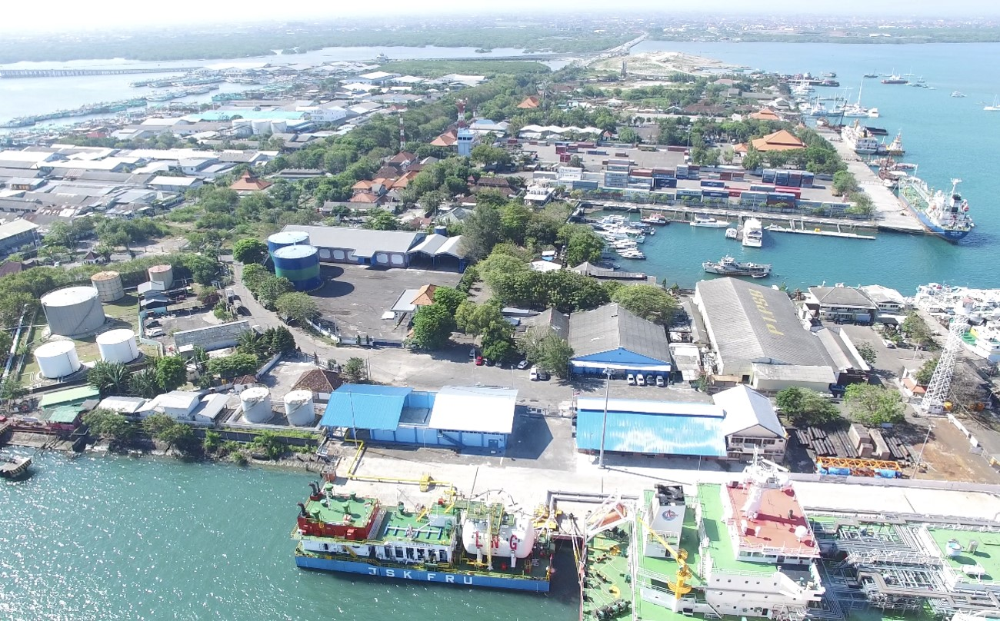

Gedung AIA Central, Lt. 33
Jl. Jend. Sudirman Kav. 48A
Jakarta 12930
Indonesia
| Phone: | +62 21 252 0528 |
| Fax: | +62 21 252 0526 |
| E-mail: | jsk@jsk.co.id |
| Website: | www.jsk.co.id |
Small-scale LNG supplement: A new era of floating small-scale LNG regasification begins
April 21, 2016
The era of floating small-scale regasification is about to begin with the commissioning of an LNG receiving terminal at Benoa on the Indonesian island of Bali. The facility will be operated by PT Pelindo Energi Logistik (PEL), an affiliate of the state-owned port operator. Central to the US$500 million project is a dedicated berth in the port at which a floating regasification unit (FRU) and floating storage unit (FSU) provided by Jaya Samudera Karunia (JSK) Group are stationed. JSK is also chartering Triputra (ex-Surya Satsuma), a 23,000m3, 2000-built LNGC owned by PT Humpuss, to shuttle to Bali an agreed volume of 300,000 tonnes per annum of LNG from Indonesia’s large Bontang liquefaction plant in Kalimantan. The seven-year fixture is worth US$100m to Humpuss and has necessitated a switch to the Indonesian flag for the vessel to comply with domestic cabotage laws. Gas processed by the Benoa FRU will be piped 3.7km to a 200MW diesel and gas-fired power plant in Pesanggaran owned by state electricity firm PT Perusahaan Listrik Negara (PLN). CSI plans to focus on further small to mid-scale LNG opportunities where its new technical assistance and licence agreement (TALA) with GTT can be utilised.
Remote access
Diesel fuel is used to power most of the small power plants dotted around the islands of Eastern Indonesia. PLN points out that the transport of LNG by sea to strategically located small-scale receiving terminals, as in Bali, will enable the replacement of diesel fuel by clean-burning natural gas. Such substitution, in turn, will enhance national energy sustainability and reduce the need for government diesel subsidies. Neither gas transmission pipelines nor full-size LNG receiving terminals are feasible in eastern Indonesia as the relatively low gas demand does not justify the high capital costs involved. Coastal LNG carriers and small-scale receiving terminals offer the most cost-effective gas distribution solution for reaching the region’s “stranded” markets. The Bali project highlights the benefits that small floating regas facilities can bring to remote markets where demand is limited and there is a desire to replace other fossil fuels with clean-burning gas. Capital expenditure is much less than that required for a shore terminal while operating costs are below those of a conventional-size FSRU. No onshore permits are required for small floaters and the time between a final investment decision and project startup should not exceed two years.
Barge-mounted regas facilities provide the ultimate in flexibility, including in terms of the ability to relocate and scalability through additional units to meet developing market needs. Barges are also able to accommodate shallow waters, thus minimising the need for dredging.
Source : lngworldshipping